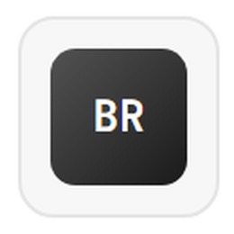

Cronos
VEJA ANTES · AJA ANTES
Template · slide 8
Fontes de dados
Duas fontes entram, e um campo do dataset decide o que
conta para a meta
Fonte interna
LW-DATASET
.xlsx
Excel da operação
122.543
Incidentes
19
Colunas
jan/2023 a dez/2025
Janela
xl
openpyxl
3.1.5
pandas
2.2.3
Elegibilidade ao KPI
Registrados
122.543
100%
Filtro errado
só por
Incidente Pai
107.416
88%
Elegíveis
campo
Entrou para KPI?
25.600
21%
Fonte externa
holidays
Feriado nacional
0.97
Versão
BR
País

holidays
0.97
Python
3.13
Cronos · Super Data Bros · 2TSCOA
Challenge FIAP 2026 com Locaweb